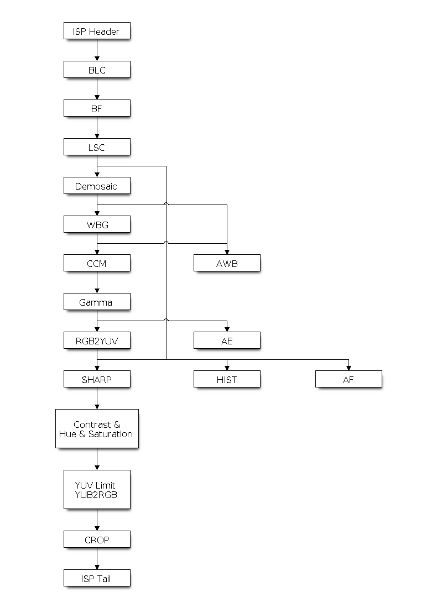

🎥 ESP-32 P4 IQ Function 調整項目與說明
本文件說明 ESP32-P4 ISP 影像處理管線的所有可調參數與函式。ESP32-P4 採用管線化（pipeline）的 ISP 架構，涵蓋從感測器輸入到色彩輸出的完整處理流程。
1️⃣ A. ISP 操作流程

ESP-32 P4 ISP Tune Flow
處理管線順序
BLC → BF → LSC → Demosaic → WBG → AWB → CCM → Gamma → AE → SHARP → Contrast&Hue&Saturation → CRCP
調用函數
esp_isp_new_processor()
esp_isp_del_processor() // 用於 ISP 核心處理器。
esp_isp_new_af_controller()
esp_isp_del_af_controller() // 用於 ISP AF 控制器。
esp_isp_new_awb_controller()
esp_isp_del_awb_controller() // 用於 ISP AWB 控制器。
esp_isp_new_ae_controller()
esp_isp_del_ae_controller() // 用於 ISP AE 控制器。
esp_isp_new_hist_controller()
esp_isp_del_hist_controller() // 用於 ISP 長條圖控制器。
2️⃣ 資源配置
安裝 ISP 驅動程式
ISP 驅動程式需要由 esp_isp_processor_cfg_t 指定配置。指定配置後，可以調用 esp_isp_new_processor() 來分配和初始化 ISP 處理器。如果函數運行正常，將返回一個 ISP 處理器控制碼。請參考以下代碼：
esp-video-components-master\esp_video\src\device\esp_video_csi_device.c
C
esp_isp_processor_cfg_t isp_config = {
.clk_src = ISP_CLK_SRC_DEFAULT,
.input_data_source = ISP_INPUT_DATA_SOURCE_CSI, // Force input data source to CSI
.has_line_start_packet = mipi_info->line_sync_en,
.has_line_end_packet = mipi_info->line_sync_en,
.h_res = width,
.v_res = height,
.yuv_range = csi_video->yuv_range,
.yuv_std = csi_video->yuv_std,
.input_data_color_type = in_out_format->isp_input_fmt,
.output_data_color_type = in_out_format->isp_output_fmt,
.bayer_order = csi_video->bayer_order,
#if ESP_VIDEO_ISP_DRIVER_HAS_BYPASS
.flags = {
.bypass_isp = in_out_format->isp_bypass_required
}
}
ISP 核心與控制器調用流程 (Software API Flow)
在軟體資源配置與初始化階段，需透過驅動結構設定與控制器建立函數來完成初始化：
P
[ 開始初始化 ISP ]
│
├─► 1. 設置配置結構體：esp_isp_processor_cfg_t
│ (設定時脈、CSI 輸入來源、解像度、YUV 格式、Bayer 陣列等)[cite: 1]
│
├─► 2. 調用 esp_isp_new_processor()[cite: 1]
│ └─► 成功：分配並初始化 ISP 核心處理器，返回控制碼 (Processor Handle)
│
├─► 3. 初始化各子控制器（依需求調用）：
│ ├─ 曝光控制: esp_isp_new_ae_controller() / esp_isp_del_ae_controller()[cite: 1]
│ ├─ 白平衡控制: esp_isp_new_awb_controller() / esp_isp_del_awb_controller()[cite: 1]
│ ├─ 對焦控制: esp_isp_new_af_controller() / esp_isp_del_af_controller()[cite: 1]
│ └─ 長條圖控制器: esp_isp_new_hist_controller() / esp_isp_del_hist_controller()[cite: 1]
│
│ [ 執行影像串流與 ISP IPA 管線運作 (IAN, AGC, AWB, ACC, ADN, AEN, ATC...) ]
│
└─► 4. 結束 / 卸載：
調用對應的 del 函數釋放資源 (如 esp_isp_del_processor())[cite: 1]
3️⃣ ISP 處理管線模組說明
1. BLC（Black Level Correction，黑位準校正）
ISP BLC 控制器：黑電平校正 (BLC) 旨在解決因相機感測器中光線折射不均而引起的問題。補償感測器在無光環境下的基線訊號，確保暗部細節正確呈現。
2. BF（Bayer Filter，拜耳濾波器）
ISP BF 控制器：此流水線用於在拜耳模式下進行圖像輸入降噪。在感測器原始 RAW 資料階段即進行初步降噪，減少後續處理的雜訊累積。
3. LSC（Lens Shading Correction，鏡頭陰影校正）
ISP LSC 控制器：鏡頭陰影校正 (LSC) 旨在解決因相機鏡頭中光線折射不均而引起的問題。補償因鏡頭光學特性造成的亮度與色彩不均勻現象（暗角）。
4. Demosaic（去馬賽克）
ISP 去馬賽克控制器：此流水線用於執行圖像去馬賽克演算法，將 RAW 圖像（Bayer 格式）轉換為 RGB 模式。透過插值演算法重建完整的 RGB 三通道影像。
5. WBG（White Balance Gain，白平衡增益）
ISP White Balance Gain：根據 AWB 演算法計算的 R/G、B/G 比值，套用對應的通道增益以校正色彩偏差。
6. AWB（Auto White Balance，自動白平衡）
自動白平衡控制：根據影像統計分析，自動調整 R、G、B 通道增益，使白色物體在任何色溫光源下都呈現中性灰。
7. CCM（Color Correction Matrix，色彩校正矩陣）
配置 CCM：色彩校正矩陣可以調整 RGB888 圖元格式的顏色比例，可用於通過演算法調整圖像顏色（例如，使用 AWB 計算結果進行白平衡），或者通過濾波演算法用作篩檢程式。
8. Gamma（Gamma 校正）
啟用 gamma 校正：人眼的視覺系統對物理亮度的感知是非線性的。將 gamma 校正添加到 ISP 流水線中，可以將 RGB 座標轉換為座標與主觀亮度成正比的空間，使影像呈現更符合人眼感受的視覺效果。
9. AE（Auto Exposure，自動曝光）
自動曝光控制：根據畫面亮度統計，自動調整感測器曝光時間與增益，使畫面亮度維持在目標值。
10. SHARP（Sharpness，銳化）
ISP 銳化控制器：此流水線用於在 YUV 模式下銳化輸入圖像，增強影像邊緣與細節的清晰度。
11. Contrast & Hue & Saturation（對比/色調/飽和度）
ISP 色彩控制器：該流水線用於調整圖像的對比度、飽和度、色調和亮度。
- 對比度：應為 0 ~ 1.0，預設值為 1.0
- 飽和度：應為 0 ~ 1.0，預設值為 1.0
- 色調：應為 0 ~ 360，預設值為 0
- 亮度：應為 -127 ~ 128，預設值為 0
12. CRCP
CRCP 處理模組。
📋 B. ISP IPA (Image Processing Algorithm) 參數
此說明 ESP ISP 影像處理演算法的所有可調參數。IPA 是一個管線化（pipeline）的影像處理框架，由多個演算法模組組成。下方依模組分類完整列出所有可調整的參數。
一、IPA 整體管線配置 esp_ipa_config_t
| 參數 |
說明 |
| names[] / nums | 演算法名稱陣列 |
| enable_log | 演算法核心日誌開關 |
| version | 設定版本號 |
| ian | 影像分析設定（指向 esp_ipa_ian_config_t） |
| agc | 自動增益控制設定 |
| awb | 自動白平衡設定 |
| acc | 自動色彩校正設定 |
| adn | 自動降噪設定 |
| aen | 自動影像增強設定 |
| af | 自動對焦設定 |
| atc | 自動 AE 目標等級控制設定 |
| ext | 延伸設定（hue / brightness / stats_region） |
{
"version": 1,
}
二、IAN（Image Analyze，影像分析）
1. 色彩溫度分析 esp_ipa_ian_ct_config_t
| 參數 | 說明 |
|---|
| model | 分析模型類型（MODEL_0/1/2） |
| m_a0, m_a1, m_a2 | 來源資料模型參數 |
| f_n0 | 色溫濾波參數 |
| bp[] / bp_nums | 色溫基本參數表（a0/a1） |
| min_step | 色溫最小步進值 |
| g_a0, g_a1 | 色溫參數 |
| g_a2[] / g_a2_nums | 色溫參數 g_a2 查詢表 |
"model": 0,
"m_0":
{
},
"m_1":
{
"a0": -1,
"a1": 11
},
"m_2":
{
"a0": -1,
"a1": 11,
"a2": 10
},
"f_n0": 1
"bp":
[
{
"a0": 10,
"a1": 1
},
{
"a0": 9,
"a1": 2
},
{
"a0": 8,
"a1": 3
},
{
"a0": 7,
"a1": 4
},
...
"g":
{
"a0": -1,
"a1": -1,
"a2":
[
-1,
1,
-1,
1
]
},
2. 直方圖分析 esp_ipa_ian_luma_hist_config_t
| 參數 | 說明 |
|---|
| mean[] | 直方圖分段平均值表 |
| low_index_start/end | 低亮度區段起訖索引 |
| high_index_start/end | 高亮度區段起訖索引 |
| back_light_radio_threshold | 背光比例閾值 |
3. AE 區塊分析 esp_ipa_ian_luma_ae_config_t
- weight[ISP_AE_REGIONS]：AE 各區塊權重
4. 環境亮度分析 esp_ipa_ian_luma_env_config_t
- k：環境亮度係數
- speed_param[] / speed_param_size：速度參數陣列
- weight[]：環境亮度權重表
5. 整合設定 esp_ipa_ian_config_t
三、AGC（Auto Gain Control，自動增益控制）
基本時序與增益
| 參數 | 說明 |
|---|
| exposure_frame_delay | 曝光生效延遲幀數 |
| gain_frame_delay | 增益生效延遲幀數 |
| exposure_adjust_delay | 曝光調整延遲時間（ms） |
| min_gain_step | 最小增益步進 |
| max_gain | 最大感測器增益（0 表示不額外限制） |
| inc_gain_ratio | 亮度增益上升比例 |
| dec_gain_ratio | 亮度增益下降比例 |
| gain_only | 僅調整增益，不動曝光 |
| fixed_exposure_time | 固定曝光時間（µs，僅在 gain_only=true） |
抗閃爍
| 參數 | 說明 |
|---|
| anti_flicker_mode | FULL / PART / NONE |
| ac_freq | 交流電頻率（50/60Hz） |
亮度控制
| 參數 | 說明 |
|---|
| luma_low / luma_high | 低/高亮度 |
| luma_target | 目標亮度 |
| luma_low_threshold / luma_high_threshold | 低/高亮度閾值 |
| luma_low_regions / luma_high_regions | 低/高亮度區塊數 |
| luma_weight_table[ISP_AE_REGIONS] | 各區塊權重 |
| meter_mode | 測光模式（AVERAGE / HIGHLIGHT / LOWLIGHT / THRESHOLD） |
進階 PWL
| 參數 | 說明 |
|---|
| luma_pwl_enable | 環境亮度 PWL 動態目標位移開關 |
| luma_pwl[] / luma_pwl_size | 環境亮度→目標亮度位移表 |
| low_light_prior_config | 低光優先配置 |
| high_light_prior_config | 高光優先配置 |
| light_threshold_config | 亮度閾值表（含 use_env_luma、table、size） |
"agc":
{
"exposure":
{
"frame_delay": 2,
"adjust_delay": 0
},
"gain":
{
"min_step": 0.0001,
"frame_delay": 2
},
"anti_flicker":
{
"mode": "full",
"ac_freq": 50
},
"f_n0": 1,
"luma_adjust":
{
"target_low": 50,
"target_high": 150,
"target": 100,
"low_threshold": 30,
"low_regions": 10,
"high_threshold": 220,
"high_regions": 10,
"weight":
[
1, 1, 1, 1, 1,
1, 1, 1, 1, 1,
1, 1, 1, 1, 1,
1, 1, 1, 1, 1,
1, 1, 1, 1, 1
]
},
"mode": "high_light_priority",
"high_light_priority":
{
"low_threshold": 120,
"high_threshold": 180,
"weight_offset": 5,
"luma_offset": 5
},
"low_light_priority":
{
"low_threshold": 40,
"high_threshold": 80,
"weight_offset": 10,
"luma_offset": 10
},
"light_threshold_priority":
[
{
"luma_threshold": 60,
"weight_offset": 5
},
{
"luma_threshold": 80,
"weight_offset": 10
},
{
"luma_threshold": 100,
"weight_offset": 15
},
{
"luma_threshold": 120,
"weight_offset": 20
},
{
"luma_threshold": 140,
"weight_offset": 25
}
],
"luma_pwl":
{
"enable": true,
"table":
[
{
"env_luma": 500,
"luma_shift": -15
},
{
"env_luma": 2000,
"luma_shift": 0
},
{
"env_luma": 5000,
"luma_shift": 0
},
{
"env_luma": 12000,
"luma_shift": -10
}
]
}
},
四、AWB（Auto White Balance，自動白平衡）
通用設定
| 參數 | 說明 |
|---|
| model | MODEL_0（灰世界）/ MODEL_1（色溫索引）/ MODEL_2（區域分類） |
| min_red_gain_step / min_blue_gain_step | 紅/藍增益最小步進（過小不寫入硬體） |
| red_gain_scale / blue_gain_scale | 紅/藍增益縮放（1.0 = 不補償） |
| enable_log | 日誌開關 |
Model_0（灰世界）
| 參數 | 說明 |
|---|
| min_counted | 觸發處理的最小白點數 |
| range | AWB 統計範圍（green_max/min、rg_max/min、bg_max/min） |
Sub-window（與 Model 0 共用）
| 參數 | 說明 |
|---|
| enable_subwin | 啟用子窗口聚合（須 IPA_STATS_FLAGS_AWB_SUBWIN） |
| min_subwin_wp_counted | 每子窗口最小白點數 |
| min_subwin_participated | 至少參與的子窗口數 |
| subwin_weight[][] | 2D 子窗口權重（≤0 跳過，預設 1.0） |
| subwin_green_dark / subwin_green_mid / subwin_green_bright | 綠色亮度過濾（過暗/峰值/過亮） |
| green_luma_env / green_luma_init / green_luma_step_ratio | 綠色亮度環境變數與步進比 |
Model_2（區域分類器）
| 參數 | 說明 |
|---|
| zones[] / zones_count | 色度邊界框區域表 |
| ref_points[] / ref_points_count | 校色溫參考點（含 rg/bg/radius） |
| new_w / prev_w | 時序 IIR 濾波新/舊幀權重 |
| export_ct | 將估算 CT 發佈到 KV "ct"（供 ACC 使用） |
Model_2 時序穩定
| 參數 | 說明 |
|---|
| outlier_rg / outlier_bg | 逐格離群閘值（≤0 關閉） |
| zone_hysteresis_ratio | 區域切換遲滯（1.0 平等，>1 黏滯） |
| zone_switch_count | 區域切換去抖幀數 |
| type_counter_max | 類型計數上限（達上限時清空其他） |
"awb":
{
"model": 0,
"min_red_gain_step": 0.5,
"min_blue_gain_step": 0.5,
"min_counted": 1000,
"range":
{
"green":
{
"max": 200,
"min": 180
},
"rg":
{
"max": 1.2,
"min": 0.8
},
"bg":
{
"max": 1.2,
"min": 0.8
}
},
"green_luma_env": "dummy_awb_luma",
"green_luma_init": 200,
"green_luma_step_ratio": 0.3,
"enable_sub_win": true,
"sub_win": {
"min_counted": 100,
"min_participated": 3,
"weight": [
1.0, 1.0, 1.0, 1.0, 1.0,
1.0, 1.0, 1.0, 1.0, 1.0,
1.0, 1.0, 1.0, 1.0, 1.0,
1.0, 1.0, 1.0, 1.0, 1.0,
1.0, 1.0, 1.0, 1.0, 1.0
],
"green": {
"dark": 40,
"mid": 100,
"bright": 200
}
},
"new_w": 1.0,
"prev_w": 0.0,
"export_ct": false,
"zone_switch_count": 1,
"type_counter_max": 500,
"outlier_rg": 0.0,
"outlier_bg": 0.0,
"zone_hysteresis_ratio": 0.0,
"zones": [
{
"type": "mct",
"rg": { "min": 0.45, "max": 0.70 },
"bg": { "min": 0.45, "max": 0.70 },
"enabled": true
}
],
"ref_points": [
{
"ct": 5200,
"rg": 0.55,
"bg": 0.55,
"radius": 0.35
}
]
},
五、ACC（Auto Color Correct，自動色彩校正）
"acc":
飽和度
| 參數 | 說明 |
|---|
| sat_table[] / sat_table_size | 色溫→飽和度對照表 |
"saturation":
[
{
"color_temp": 1000,
"value": 1
},
{
"color_temp": 2000,
"value": 2
},
{
"color_temp": 3000,
"value": 3
},
{
"color_temp": 4000,
"value": 4
},
{
"color_temp": 5000,
"value": 5
}
],
CCM（Color Correction Matrix）
| 參數 | 說明 |
|---|
| model | MODEL_0 / MODEL_1 |
| luma_env | 亮度環境變數名 |
| luma_low_threshold / luma_low_ccm | 低亮度閾值與對應 CCM |
| ccm_table[] / ccm_table_size | 色溫→CCM 對照表 |
| gain_lut_enable | 增益型 CCM 強度 LUT 開關 |
| gain_lut[] / gain_lut_size | 增益→CCM 混合強度表 |
| min_ct_step | 最小色溫步進（MODEL_1） |
"ccm":
{
"low_luma":
{
"luma_env": "dummy_gamma_luma",
"threshold": 15.5,
"matrix":
[
1.0, 0, 0,
0, 1.0, 0,
0, 0, 1.0
]
},
"table":
[
{
"color_temp": 1000,
"matrix":
[
1.1, 1.1, 1.1,
1.1, 1.1, 1.1,
1.1, 1.1, 1.1
]
},
{
"color_temp": 2000,
"matrix":
[
1.2, 1.2, 1.2,
1.2, 1.2, 1.2,
1.2, 1.2, 1.2
]
},
{
"color_temp": 3000,
"matrix":
[
1.3, 1.3, 1.3,
1.3, 1.3, 1.3,
1.3, 1.3, 1.3
]
},
{
"color_temp": 4000,
"matrix":
[
1.4, 1.4, 1.4,
1.4, 1.4, 1.4,
1.4, 1.4, 1.4
]
},
{
"color_temp": 5000,
"matrix":
[
1.5, 1.5, 1.5,
1.5, 1.5, 1.5,
1.5, 1.5, 1.5
]
}
],
"gain_lut":
{
"enable": true,
"table":
[
{ "gain": 1.0, "strength": 1.0 },
{ "gain": 8.0, "strength": 0.5 },
{ "gain": 16.0, "strength": 0.0 }
]
}
},
LSC（Lens Shadow Correction）
| 參數 | 說明 |
|---|
| lsc_table[] / lsc_table_size | 解析度+色溫→LSC 對照表 |
| lsc_disable_gain | 感測器增益≥此值時關閉 LSC（≤0 = 不關） |
"lsc":
{
"model": 0,
"img_w": 1080,
"img_h": 720,
"lsc_tbl_size": 64,
"table":
[
{
"ct": 3000,
"calibrations_r_tbl":
[
1, 1, 1, 1, 1, 1, 1, 1, 1, 1, 1, 1, 1, 1, 1, 1, 1, 1, 1, 1, 1, 1, 1, 1, 1, 1, 1, 1, 1, 1, 1, 1,
1, 1, 1, 1, 1, 1, 1, 1, 1, 1, 1, 1, 1, 1, 1, 1, 1, 1, 1, 1, 1, 1, 1, 1, 1, 1, 1, 1, 1, 1, 1, 1,
1, 1, 1, 1, 1, 1, 1, 1, 1, 1, 1, 1, 1, 1, 1, 1, 1, 1, 1, 1, 1, 1, 1, 1, 1, 1, 1, 1, 1, 1, 1, 1,
1, 1, 1, 1, 1, 1, 1, 1, 1, 1, 1, 1, 1, 1, 1, 1, 1, 1, 1, 1, 1, 1, 1, 1, 1, 1, 1, 1, 1, 1, 1, 1
],
"calibrations_gr_tbl":
[
1.5, 1.5, 1.5, 1.5, 1.5, 1.5, 1.5, 1.5, 1.5, 1.5, 1.5, 1.5, 1.5, 1.5, 1.5, 1.5, 1.5, 1.5, 1.5, 1.5, 1.5, 1.5, 1.5, 1.5, 1.5, 1.5, 1.5, 1.5, 1.5, 1.5, 1.5, 1.5,
1.5, 1.5, 1.5, 1.5, 1.5, 1.5, 1.5, 1.5, 1.5, 1.5, 1.5, 1.5, 1.5, 1.5, 1.5, 1.5, 1.5, 1.5, 1.5, 1.5, 1.5, 1.5, 1.5, 1.5, 1.5, 1.5, 1.5, 1.5, 1.5, 1.5, 1.5, 1.5,
1.5, 1.5, 1.5, 1.5, 1.5, 1.5, 1.5, 1.5, 1.5, 1.5, 1.5, 1.5, 1.5, 1.5, 1.5, 1.5, 1.5, 1.5, 1.5, 1.5, 1.5, 1.5, 1.5, 1.5, 1.5, 1.5, 1.5, 1.5, 1.5, 1.5, 1.5, 1.5,
1.5, 1.5, 1.5, 1.5, 1.5, 1.5, 1.5, 1.5, 1.5, 1.5, 1.5, 1.5, 1.5, 1.5, 1.5, 1.5, 1.5, 1.5, 1.5, 1.5, 1.5, 1.5, 1.5, 1.5, 1.5, 1.5, 1.5, 1.5, 1.5, 1.5, 1.5, 1.5
],
"calibrations_gb_tbl":
[
2, 2, 2, 2, 2, 2, 2, 2, 2, 2, 2, 2, 2, 2, 2, 2, 2, 2, 2, 2, 2, 2, 2, 2, 2, 2, 2, 2, 2, 2, 2, 2,
2, 2, 2, 2, 2, 2, 2, 2, 2, 2, 2, 2, 2, 2, 2, 2, 2, 2, 2, 2, 2, 2, 2, 2, 2, 2, 2, 2, 2, 2, 2, 2,
2, 2, 2, 2, 2, 2, 2, 2, 2, 2, 2, 2, 2, 2, 2, 2, 2, 2, 2, 2, 2, 2, 2, 2, 2, 2, 2, 2, 2, 2, 2, 2,
2, 2, 2, 2, 2, 2, 2, 2, 2, 2, 2, 2, 2, 2, 2, 2, 2, 2, 2, 2, 2, 2, 2, 2, 2, 2, 2, 2, 2, 2, 2, 2
],
"calibrations_b_tbl":
[
2.5, 2.5, 2.5, 2.5, 2.5, 2.5, 2.5, 2.5, 2.5, 2.5, 2.5, 2.5, 2.5, 2.5, 2.5, 2.5, 2.5, 2.5, 2.5, 2.5, 2.5, 2.5, 2.5, 2.5, 2.5, 2.5, 2.5, 2.5, 2.5, 2.5, 2.5, 2.5,
2.5, 2.5, 2.5, 2.5, 2.5, 2.5, 2.5, 2.5, 2.5, 2.5, 2.5, 2.5, 2.5, 2.5, 2.5, 2.5, 2.5, 2.5, 2.5, 2.5, 2.5, 2.5, 2.5, 2.5, 2.5, 2.5, 2.5, 2.5, 2.5, 2.5, 2.5, 2.5,
2.5, 2.5, 2.5, 2.5, 2.5, 2.5, 2.5, 2.5, 2.5, 2.5, 2.5, 2.5, 2.5, 2.5, 2.5, 2.5, 2.5, 2.5, 2.5, 2.5, 2.5, 2.5, 2.5, 2.5, 2.5, 2.5, 2.5, 2.5, 2.5, 2.5, 2.5, 2.5,
2.5, 2.5, 2.5, 2.5, 2.5, 2.5, 2.5, 2.5, 2.5, 2.5, 2.5, 2.5, 2.5, 2.5, 2.5, 2.5, 2.5, 2.5, 2.5, 2.5, 2.5, 2.5, 2.5, 2.5, 2.5, 2.5, 2.5, 2.5, 2.5, 2.5, 2.5, 2.5
]
},
{
"ct": 5000,
"calibrations_r_tbl":
[
0.1, 0.1, 0.1, 0.1, 0.1, 0.1, 0.1, 0.1, 0.1, 0.1, 0.1, 0.1, 0.1, 0.1, 0.1, 0.1, 0.1, 0.1, 0.1, 0.1, 0.1, 0.1, 0.1, 0.1, 0.1, 0.1, 0.1, 0.1, 0.1, 0.1, 0.1, 0.1,
0.1, 0.1, 0.1, 0.1, 0.1, 0.1, 0.1, 0.1, 0.1, 0.1, 0.1, 0.1, 0.1, 0.1, 0.1, 0.1, 0.1, 0.1, 0.1, 0.1, 0.1, 0.1, 0.1, 0.1, 0.1, 0.1, 0.1, 0.1, 0.1, 0.1, 0.1, 0.1,
0.1, 0.1, 0.1, 0.1, 0.1, 0.1, 0.1, 0.1, 0.1, 0.1, 0.1, 0.1, 0.1, 0.1, 0.1, 0.1, 0.1, 0.1, 0.1, 0.1, 0.1, 0.1, 0.1, 0.1, 0.1, 0.1, 0.1, 0.1, 0.1, 0.1, 0.1, 0.1,
0.1, 0.1, 0.1, 0.1, 0.1, 0.1, 0.1, 0.1, 0.1, 0.1, 0.1, 0.1, 0.1, 0.1, 0.1, 0.1, 0.1, 0.1, 0.1, 0.1, 0.1, 0.1, 0.1, 0.1, 0.1, 0.1, 0.1, 0.1, 0.1, 0.1, 0.1, 0.1
],
"calibrations_gr_tbl":
[
0.3, 0.3, 0.3, 0.3, 0.3, 0.3, 0.3, 0.3, 0.3, 0.3, 0.3, 0.3, 0.3, 0.3, 0.3, 0.3, 0.3, 0.3, 0.3, 0.3, 0.3, 0.3, 0.3, 0.3, 0.3, 0.3, 0.3, 0.3, 0.3, 0.3, 0.3, 0.3,
0.3, 0.3, 0.3, 0.3, 0.3, 0.3, 0.3, 0.3, 0.3, 0.3, 0.3, 0.3, 0.3, 0.3, 0.3, 0.3, 0.3, 0.3, 0.3, 0.3, 0.3, 0.3, 0.3, 0.3, 0.3, 0.3, 0.3, 0.3, 0.3, 0.3, 0.3, 0.3,
0.3, 0.3, 0.3, 0.3, 0.3, 0.3, 0.3, 0.3, 0.3, 0.3, 0.3, 0.3, 0.3, 0.3, 0.3, 0.3, 0.3, 0.3, 0.3, 0.3, 0.3, 0.3, 0.3, 0.3, 0.3, 0.3, 0.3, 0.3, 0.3, 0.3, 0.3, 0.3,
0.3, 0.3, 0.3, 0.3, 0.3, 0.3, 0.3, 0.3, 0.3, 0.3, 0.3, 0.3, 0.3, 0.3, 0.3, 0.3, 0.3, 0.3, 0.3, 0.3, 0.3, 0.3, 0.3, 0.3, 0.3, 0.3, 0.3, 0.3, 0.3, 0.3, 0.3, 0.3
],
"calibrations_gb_tbl":
[
0.5, 0.5, 0.5, 0.5, 0.5, 0.5, 0.5, 0.5, 0.5, 0.5, 0.5, 0.5, 0.5, 0.5, 0.5, 0.5, 0.5, 0.5, 0.5, 0.5, 0.5, 0.5, 0.5, 0.5, 0.5, 0.5, 0.5, 0.5, 0.5, 0.5, 0.5, 0.5,
0.5, 0.5, 0.5, 0.5, 0.5, 0.5, 0.5, 0.5, 0.5, 0.5, 0.5, 0.5, 0.5, 0.5, 0.5, 0.5, 0.5, 0.5, 0.5, 0.5, 0.5, 0.5, 0.5, 0.5, 0.5, 0.5, 0.5, 0.5, 0.5, 0.5, 0.5, 0.5,
0.5, 0.5, 0.5, 0.5, 0.5, 0.5, 0.5, 0.5, 0.5, 0.5, 0.5, 0.5, 0.5, 0.5, 0.5, 0.5, 0.5, 0.5, 0.5, 0.5, 0.5, 0.5, 0.5, 0.5, 0.5, 0.5, 0.5, 0.5, 0.5, 0.5, 0.5, 0.5,
0.5, 0.5, 0.5, 0.5, 0.5, 0.5, 0.5, 0.5, 0.5, 0.5, 0.5, 0.5, 0.5, 0.5, 0.5, 0.5, 0.5, 0.5, 0.5, 0.5, 0.5, 0.5, 0.5, 0.5, 0.5, 0.5, 0.5, 0.5, 0.5, 0.5, 0.5, 0.5
],
"calibrations_b_tbl":
[
0.8, 0.8, 0.8, 0.8, 0.8, 0.8, 0.8, 0.8, 0.8, 0.8, 0.8, 0.8, 0.8, 0.8, 0.8, 0.8, 0.8, 0.8, 0.8, 0.8, 0.8, 0.8, 0.8, 0.8, 0.8, 0.8, 0.8, 0.8, 0.8, 0.8, 0.8, 0.8,
0.8, 0.8, 0.8, 0.8, 0.8, 0.8, 0.8, 0.8, 0.8, 0.8, 0.8, 0.8, 0.8, 0.8, 0.8, 0.8, 0.8, 0.8, 0.8, 0.8, 0.8, 0.8, 0.8, 0.8, 0.8, 0.8, 0.8, 0.8, 0.8, 0.8, 0.8, 0.8,
0.8, 0.8, 0.8, 0.8, 0.8, 0.8, 0.8, 0.8, 0.8, 0.8, 0.8, 0.8, 0.8, 0.8, 0.8, 0.8, 0.8, 0.8, 0.8, 0.8, 0.8, 0.8, 0.8, 0.8, 0.8, 0.8, 0.8, 0.8, 0.8, 0.8, 0.8, 0.8,
0.8, 0.8, 0.8, 0.8, 0.8, 0.8, 0.8, 0.8, 0.8, 0.8, 0.8, 0.8, 0.8, 0.8, 0.8, 0.8, 0.8, 0.8, 0.8, 0.8, 0.8, 0.8, 0.8, 0.8, 0.8, 0.8, 0.8, 0.8, 0.8, 0.8, 0.8, 0.8
]
}
]
},
BLC（Black Level Correction）
| 參數 | 說明 |
|---|
| blc->model | BLC 模型 |
| blc->blc_table[] / blc->blc_table_size | 增益→BLC 參數對照表 |
"blc":
{
"model": 0,
"stretch": true,
"blc_table":
[
{
"gain": 1,
"blc_param": {
"blc_top_left": 16,
"blc_top_right": 16,
"blc_bottom_left": 16,
"blc_bottom_right": 16
}
},
{
"gain": 17,
"blc_param": {
"blc_top_left": 32,
"blc_top_right": 32,
"blc_bottom_left": 32,
"blc_bottom_right": 32
}
},
{
"gain": 33,
"blc_param": {
"blc_top_left": 48,
"blc_top_right": 48,
"blc_bottom_left": 48,
"blc_bottom_right": 48
}
},
{
"gain": 49,
"blc_param": {
"blc_top_left": 64,
"blc_top_right": 64,
"blc_bottom_left": 64,
"blc_bottom_right": 64
}
}
]
}
},
通用
六、ADN（Auto Denoising，自動降噪）
| 參數 | 說明 |
|---|
| bf_table[] / bf_table_size | 增益→Bayer 濾波器（BF）參數對照表 |
| dm_table[] / dm_table_size | 增益→去馬賽克（Demosaic）參數對照表 |
| enable_log | 日誌開關 |
"adn": {
"bf":
[
{
"gain": 1,
"param": {
"level": 1,
"matrix":
[
1, 1, 1,
1, 1, 1,
1, 1, 1
]
}
},
{
"gain": 2,
"param": {
"level": 2,
"matrix":
[
2, 2, 2,
2, 2, 2,
2, 2, 2
]
}
},
{
"gain": 3,
"param": {
"level": 3,
"matrix":
[
3, 3, 3,
3, 3, 3,
3, 3, 3
]
}
},
{
"gain": 4,
"param": {
"level": 4,
"matrix":
[
4, 4, 4,
4, 4, 4,
4, 4, 4
]
}
},
{
"gain": 5,
"param": {
"level": 5,
"matrix":
[
5, 5, 5,
5, 5, 5,
5, 5, 5
]
}
},
{
"gain": 128,
"param": {
"level": 5,
"sigma": 1
}
},
{
"gain": 144,
"param": {
"level": 5,
"sigma": 2
}
}
],
"demosaic":
[
{
"gain": 1,
"gradient_ratio": 1
},
{
"gain": 2,
"gradient_ratio": 2
},
{
"gain": 3,
"gradient_ratio": 3
},
{
"gain": 4,
"gradient_ratio": 4
},
{
"gain": 5,
"gradient_ratio": 5
}
]
},
七、AEN（Auto Enhancement，自動影像增強）
"aen":
GAMMA
| 參數 | 說明 |
|---|
| gamma->model | MODEL_0 / MODEL_1 |
| gamma->luma_env | 亮度環境變數名 |
| gamma->luma_min_step | 最小亮度步進 |
| gamma->gamma_table[] / gamma_table_size | 亮度→GAMMA 對照表 |
| gamma->backlight | 背光增強設定（含 low/high_hist_ratio_threshold、env_luma_threshold、low/high_index_*、luma_env、detect_count_threshold/margin、hist_ratio_filter、model、luma_min_step、gamma_table/size） |
"gamma":
{
"model": 1,
"use_gamma_param": false,
"luma_env": "dummy_gamma_luma",
"luma_min_step": 3.0,
"table":
[
{
"luma": 10.1,
"gamma_param": 1.0,
"y":
[
0, 16, 32, 48, 64, 80, 96, 112, 128, 144, 160, 176, 192, 208, 224, 255
]
},
{
"luma": 20.1,
"gamma_param": 1.3,
"y":
[
16, 32, 48, 56, 64, 80, 96, 112, 128, 144, 160, 176, 192, 224, 240, 255
]
},
{
"luma": 30.1,
"gamma_param": 1.6,
"y":
[
32, 48, 56, 64, 72, 80, 96, 112, 128, 144, 160, 176, 192, 240, 248, 255
]
}
],
"backlight":
{
"low_hist_ratio_threshold": 0.2,
"high_hist_ratio_threshold": 0.15,
"env_luma_threshold": 5.0,
"low_index":
{
"start": 0,
"end": 4
},
"high_index":
{
"start": 14,
"end": 15
},
"luma_env": "dummy_backlight_env_luma",
"detect_count_threshold": 2,
"hist_ratio_filter": 1.0,
"model": 0,
"luma_min_step": 0.05,
"use_gamma_param": false,
"table":
[
{
"luma": 0.35,
"gamma_param": 1.0,
"y":
[
50, 60, 70, 80, 90, 100, 110, 120, 130, 140, 150, 160, 170, 180, 190, 255
]
},
{
"luma": 0.70,
"gamma_param": 1.0,
"y":
[
70, 80, 90, 100, 110, 120, 130, 140, 150, 160, 170, 180, 190, 200, 210, 255
]
}
]
}
},
Sharpen（銳化）
| 參數 | 說明 |
|---|
| sharpen_table[] / sharpen_table_size | 增益→銳化參數對照表 |
"sharpen":
[
{
"gain": 1,
"param": {
"h_thresh": 1,
"l_thresh": 1,
"h_coeff": 1,
"m_coeff": 1,
"matrix":
[
1, 1, 1,
1, 1, 1,
1, 1, 1
]
}
},
{
"gain": 2,
"param": {
"h_thresh": 2,
"l_thresh": 2,
"h_coeff": 2,
"m_coeff": 2,
"matrix":
[
2, 2, 2,
2, 2, 2,
2, 2, 2
]
}
},
{
"gain": 3,
"param": {
"h_thresh": 3,
"l_thresh": 3,
"h_coeff": 3,
"m_coeff": 3,
"matrix":
[
3, 3, 3,
3, 3, 3,
3, 3, 3
]
}
},
{
"gain": 4,
"param": {
"h_thresh": 4,
"l_thresh": 4,
"h_coeff": 4,
"m_coeff": 4,
"matrix":
[
4, 4, 4,
4, 4, 4,
4, 4, 4
]
}
},
{
"gain": 5,
"param": {
"h_thresh": 5,
"l_thresh": 5,
"h_coeff": 5,
"m_coeff": 5,
"matrix":
[
5, 5, 5,
5, 5, 5,
5, 5, 5
]
}
}
],
Contrast（對比）
| 參數 | 說明 |
|---|
| con_table[] / con_table_size | 增益→對比對照表 |
"contrast":
[
{
"gain": 1,
"value": 1
},
{
"gain": 2,
"value": 2
},
{
"gain": 3,
"value": 3
},
{
"gain": 4,
"value": 4
},
{
"gain": 5,
"value": 5
}
]
},
通用
八、AF（Auto Focus，自動對焦）
"af":
| 參數 | 說明 |
|---|
| model | AF 模型類型 |
| windows[ISP_AF_WINDOW_NUM] | 採樣視窗座標 |
| weight_table[] | 各視窗權重 |
| edge_thresh | 邊緣閾值（高於此值才算有效像素） |
| max_pos / min_pos | 焦距位置上下限 |
| l1_scan_points_num / l2_scan_points_num | 第一/二階掃描點數 |
| definition_high_threshold_ratio | 清晰度上升重啟閾值 |
| definition_low_threshold_ratio | 清晰度下降重啟閾值 |
| luminance_high_threshold_ratio | 亮度上升重啟閾值 |
| luminance_low_threshold_ratio | 亮度下降重啟閾值 |
| max_change_time | 清晰度最大變化時間（µs） |
| enable_log | 日誌開關 |
{
"windows":
[
{
"left": 50,
"top": 100,
"width": 100,
"height": 100,
"weight": 1
},
{
"left": 150,
"top": 200,
"width": 100,
"height": 100,
"weight": 10
},
{
"left": 250,
"top": 300,
"width": 100,
"height": 100,
"weight": 100
}
],
"edge_thresh": 11,
"definition_high_threshold_ratio": 1.6,
"definition_low_threshold_ratio": 0.6,
"luminance_high_threshold_ratio": 1.6,
"luminance_low_threshold_ratio": 0.6,
"l1_scan_points_num": 11,
"l2_scan_points_num": 12,
"max_pos": 500,
"max_change_time": 500
},
"customized_ipa_1":
{
"name": "esp_ipa_customized_1"
}
九、ATC（Auto AE Target Level Control）
| 參數 | 說明 |
|---|
| model | ATC 模型 |
| init_value | AE 目標等級初始值 |
| delay_frames | AE 目標等級延遲幀數 |
| luma_env | AE 目標等級亮度環境變數名 |
| min_ae_value_step | 最小 AE 步進 |
| luma_lut[] / luma_lut_size | 亮度→AE 值查詢表 |
| enable_log | 日誌開關 |
十、延伸設定 esp_ipa_ext_config_t
"ext":
| 參數 | 說明 |
|---|
| hue | 色調 |
| brightness | 亮度 |
| stats_region | ISP 統計區域（左/上/寬/高） |
{
"hue": 1,
"brightness": 2,
"stats_region":
{
"left": 3,
"top": 4,
"width": 5,
"height": 6
}
},
十一、ISP 統計與元資料旗標
統計旗標 IPA_STATS_FLAGS_*
六種統計資訊的有效性：
- AWB
- AE
- Histogram
- Sharpen
- AF
- AWB_SUBWIN
元資料旗標 IPA_METADATA_FLAGS_*
共 20 項，控制 metadata 哪些欄位需要被更新：
- AWB
- RG
- BG
- ET（曝光）
- GN（像素增益）
- BF（bayer filter）
- SH（sharpen）
- GAMMA
- CCM
- BR（brightness）
- CN（contrast）
- ST（saturation）
- HUE
- DM（demosaic）
- LSC
- AETL（AE 目標）
- SR（統計區域）
- AF
- FP（焦距）
- BLC
Gamma 更新旗標
IPA_GAMMA_FLAGS_RED/GREEN/BLUE — 控制哪個色通道需更新。
十二、可調演算法模型清單（列舉型別）
| 模組 | 模型列舉 |
|---|
| AGC 測光 | ESP_IPA_AGC_METER_AVERAGE / HIGHLIGHT_PRIOR / LOWLIGHT_PRIOR / LIGHT_THRESHOLD |
| AGC 抗閃爍 | FULL / PART / NONE |
| AWB | MODEL_0（灰世界）/ MODEL_1（色溫索引）/ MODEL_2（區域分類） |
| AWB Zone | UHCT、HCT、MCT、LCT、ULCT、GREEN、SKIN |
| IAN 色溫 | MODEL_0 / 1 / 2 |
| ACC CCM | MODEL_0 / 1 |
| ACC BLC | MODEL_0 |
| AEN GAMMA | MODEL_0 / 1 |
| AF | MODEL_0 |
| ATC | MODEL_0 |
總結
整份檔案將 IPA 拆解為 9 大演算法模組（IAN、AGC、AWB、ACC、ADN、AEN、AF、ATC、EXT），共提供 超過 150 個可調參數，涵蓋：
- 感測器控制（曝光、增益、焦距、AE 目標）
- 影像統計分析（色溫、亮度、直方圖、背光）
- ISP 處理鏈（BLC → BF → Demosaic → LSC → Sharpen → Gamma → CCM → 色彩屬性）
- 演算法策略（測光、抗閃爍、AWB 模式、AF 模式、時序穩定、區域分類）
- 校對資料表（CCM、LSC、BLC、BF、DM、Sharpen、Contrast、SAT、Gamma、CT 參考點）
每一個模組都允許透過「查表（LUT/PWL）+ 環境變數（env）」的方式動態調整，並透過 enable_log 進行除錯，是一套相當完整且彈性的 ISP 管線調校框架。
💡 建議事項
- 調整畫質前請務必保持鏡頭乾淨且對焦準確。
- 若要從頭開始調整新 Sensor，建議先透過 Enable Control 關閉所有功能，觀察原始畫質後再逐一開啟調整。